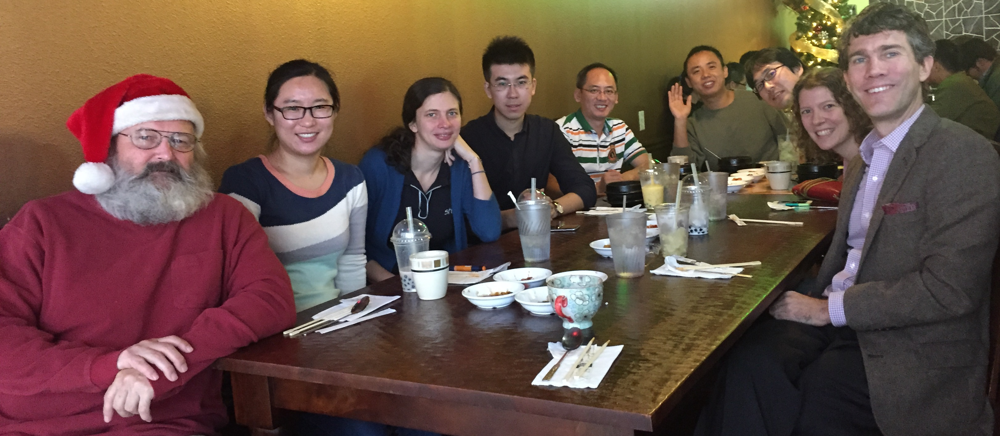
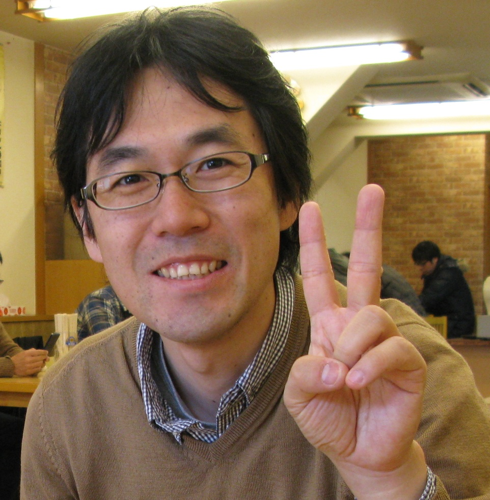
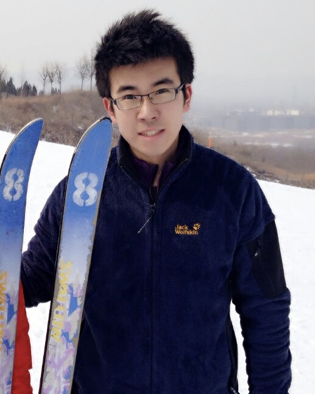

Current People
Rob Hetland Professor hetland at tamu.edu
Rob Hetland is a Professor in the Dept of Oceanography, Texas A&M University. His research is focused on numerical simulation of flow in estuarine, coastal, and continental shelf environments; applications include examining plankton bloom dynamics, formation and destruction of continental shelf hypoxia, and real-time surface current forecasting. For more information, click here.
Kristen Thyng Assistant Research Scientist kthyng at tamu.edu
 Kristen attended Whitman College for her bachelor degree in physics, graduating in 2005, before headed back to Seattle where she is from to attend the University of Washington. There, she studied applied mathematics for her masters degree (2007), then earned her PhD in mechanical engineering in 2012. She joined PONG in 2012. For more information, see her website.
Kristen attended Whitman College for her bachelor degree in physics, graduating in 2005, before headed back to Seattle where she is from to attend the University of Washington. There, she studied applied mathematics for her masters degree (2007), then earned her PhD in mechanical engineering in 2012. She joined PONG in 2012. For more information, see her website.
DJ Kobashi Postdoctoral Research Associate d.kobashi at tamu.edu
 DJ moved to the United States to pursue a doctoral degree at LSU after he completed his masters degree from Tokai University in Japan. He is interested in coastal dynamics and its links to ecosystems and human activities. He joined PONG in February 2014 after he worked at NOAA in DC and then spent 4 years in Australia where he studied climate adaptation and coastal physical processes (internal tides and mixing in shallow coastal waters) by means of field measurements and numerical modeling. For more information, see his website.
Lixin Qu Grad Student lixinqu at tamu.edu

Lixin studied mathematics at Ocean University of China (OUC) and Shandong University in China, and received his bachelor degree in mathematics from OUC in 2011. Then he moved to physical oceanography for his graduate study at OUC. During his master, he worked with the warm current system in the Yellow Sea and numerical modeling of flow in coastal and shelf environments.
After earning his master degree in 2014, he joined PONG as a Ph.D student. His research interests are coastal dynamics, coastal simulation and their applications in ecological environments. Ongoing research focuses on the effect of high-frequency wind forcing on the evolution of river plume.
Veronica Ruiz Xomchuk Grad Student vrx at email.tamu.edu
 Veronica received her bachelor degree in Oceanography from ESPOL University in Ecuador, and then she attended Gent University in Belgium for her masters degree (2003). For many years her research focused on sandy beach benthos ecosystems in Ecuador, spending her time between field work and multivariate statistical analysis. In 2012 she started working at the Oceanographic Research Institute of the Ecuadorian Navy (INOCAR), were here career path changed. As part of the development of an integrated early warning system for the Ecuadorian coast, she participated in the implementation of a forecast system based on ocean numerical models.
Veronica received her bachelor degree in Oceanography from ESPOL University in Ecuador, and then she attended Gent University in Belgium for her masters degree (2003). For many years her research focused on sandy beach benthos ecosystems in Ecuador, spending her time between field work and multivariate statistical analysis. In 2012 she started working at the Oceanographic Research Institute of the Ecuadorian Navy (INOCAR), were here career path changed. As part of the development of an integrated early warning system for the Ecuadorian coast, she participated in the implementation of a forecast system based on ocean numerical models.
Thrilled by the potential of numerical models, and how they can be used to better understand the dynamics of complex ecological systems, Veronica is back in grad school as a Ph.D student, joining PONG in September 2014.
Alumni
Tingting Zu Postdoctoral Research Associate zutt at tamu.edu
Tingting is back at the South China Sea Institute of Oceanology, Chinese Academy of Sciences as an Associate Research Professor.
Arthur Ramos Grad Student aearamos at tamu.edu
Arthur is back in Brazil, looking for gainful employment.